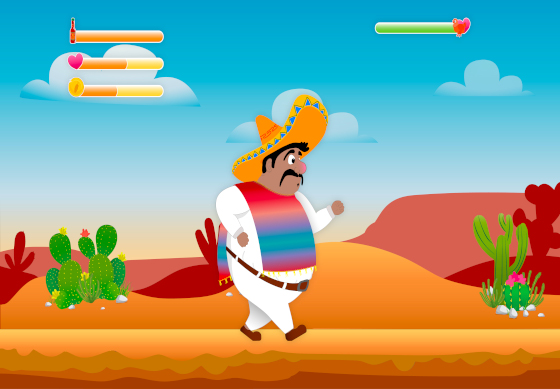

<div class="projects_wrapper">
  <div class="container">
    <div class="title_text_project">
      <div class="title_text">
        <span>MY CRAFT</span>
        <div class="projects_title">
          <h2>Projects</h2>
          <div class="line_wrapper"></div>
        </div>
        <p>
          Encourage people to take a look and interact with your projects.
          Highlight your approach to creating responsive, user-friendly projects
          with efficient code.
        </p>
      </div>
      <div class="project first">
        <div class="laptop_container" (click)="openOverlay('join')">
          <div class="floating_wrapper">
            
          </div>
          <div class="bottom_shadow"></div>
          @if (!isMobile) {
          <button class="project_btn">Project details</button>
          }
        </div>
        
        <div class="description">
          <h3>Join</h3>
          <p>
            Task manager inspired by the Kanban System. Create and organize
            tasks using drag and drop functions, assign users and categories.
          </p>
        </div>
        @if (isMobile) {
        <button class="project_btn" (click)="openOverlay('join')">
          Project details
        </button>
        }
      </div>
    </div>
    <div class="other_projects">
      <div class="project second">
        <div class="thumbnail_container" (click)="openOverlay('mafia-vs-orcs')">
          
          <div class="bottom_shadow"></div>
          @if (!isMobile) {
          <button class="project_btn">Project details</button>
          }
        </div>
        <div class="description">
          <h3>Mafia vs Orcs</h3>
          <p>
            Jump, run and throw game based on object-oriented approach. Help
            Pepe to find coins and tabasco salsa to fight against the crazy hen.
          </p>
        </div>
        @if (isMobile) {
        <button class="project_btn" (click)="openOverlay('mafia-vs-orcs')">
          Project details
        </button>
        }
      </div>
      <div class="project third">
        <div class="thumbnail_container" (click)="openOverlay('dabubble')">
          
          <div class="bottom_shadow"></div>
          @if (!isMobile) {
          <button class="project_btn">Project details</button>
          }
        </div>
        <div class="description">
          <h3>DABubble</h3>
          <p>
            This App is a Slack Clone App. It revolutionizes team communication
            and collaboration with its intuitive interface, real-time messaging,
            and robust channel organization.
          </p>
        </div>
        @if (isMobile) {
        <button class="project_btn" (click)="openOverlay('dabubble')">
          Project details
        </button>
        }
      </div>
    </div>
    <app-project-overlay
      *ngIf="showOverlay"
      [project]="selectedProject"
      (close)="closeOverlay()"
      (next)="showNextProject()"
    ></app-project-overlay>
  </div>
</div>
